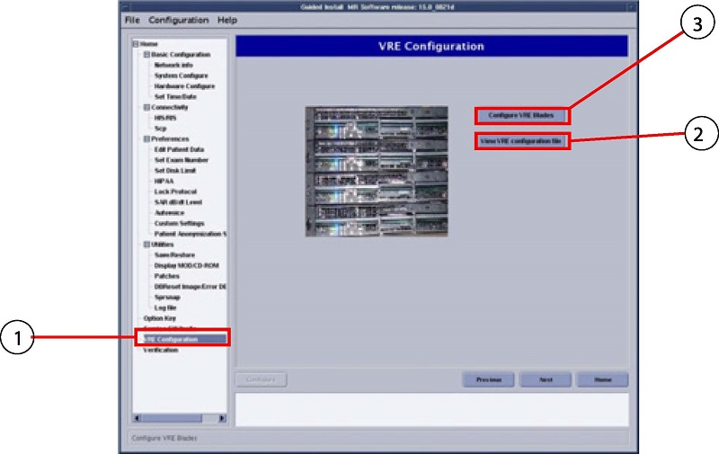
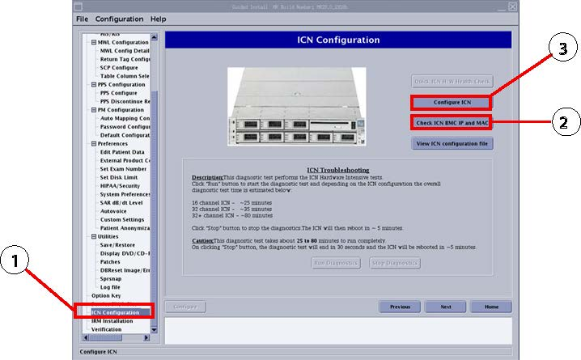
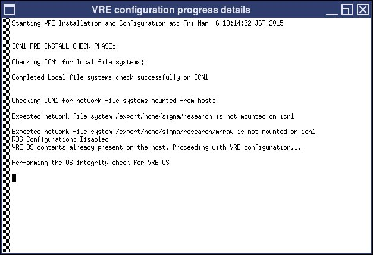
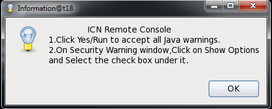
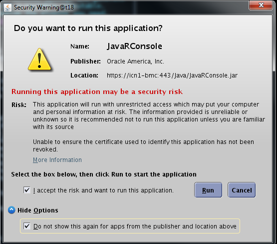

Volume Recon Engine (VRE) configuration reinstalls the software onto the Image Compute Node (ICN). This procedure is also needed after ICN replacement.
Prerequisites
Personnel requirements
Required persons
Preliminary requirements
Procedure
Finalization
1
10 minutes
30 to 60 minutes
5 minutes
Tools and test equipment
Item
Quantity
Part number
Manufacturer
M-Class SSA Hard Key
1
-
-
MR VRE Linux OS DVD(Software Version 27.0 or earlier)
1
-
-
MR Software USB Media (Software Version 28.0 or later)
1
-
-
Safety
Before working in any GE HealthCare MR suite or doing any GE HealthCare service procedure, you must:
Have read and understood all hazard conditions and safety requirements in the latest revision of the GE HealthCare MR Service Safety Manual (5452735).
Have successfully completed all relevant GE HealthCare Environmental Health and Safety (EHS) courses (or for non-GE employees, equivalent workplace training courses).
Comply with all site-specific training and workplace safety requirements.
If you have any safety concerns at any time, do not begin work or immediately stop work and move to a safe location. Immediately contact your supervisor or site safety officer for instructions on how to proceed.
Warning
Electrocution hazard
Dangerous voltages are present throughout the system cabinet when power is applied.
Refer to the MR Service Safety Manual (5452735) for information on locking and tagging out the equipment.
About this task
Use this procedure if Load From Cold (LFC) with the required software has already been completed.
The following procedure describes manual ICN-VRE configuration. ICN compatibility is dependent on software revision. Refer to Power, Gradient, RF (PGR) Cabinet for compatibility. Volume Recon Engine (VRE) and Image Compute Node (ICN) are terms that are used interchangeably; the term changed from VRE to ICN when software version 25.0 was introduced. VRE configuration installs the software onto the ICN. This procedure is needed after ICN replacement. This procedure may also be needed when troubleshooting issues with the ICN system. Refer to Troubleshooting the Image Compute Node (ICN) for more information.
Procedure
If replacing the ICN, power on the system and the host PC, and log on as root. If the system is already on, shut down any open applications before restarting the system. To restart, right-click and select System Restart.
Invoke Guided Install as root:
When you power up the host computer and see the logon screen, click on root login.
Figure 1. Logon screen
Type the user name: root and enter the root password.
Figure 2. Welcome logon screen
Click Login.
Note: It is possible that the customer changed the default password. If you cannot log on, contact the customer for the correct password.
Result
Logging on as the root user automatically shows the Linux desktop and launches the Guided Install Starter window.
Click Yes to invoke the guided install.
Note: If No has already been selected, right-click on the Linux desktop and select Start Guided Install.
(For Software Version 26.0 and later) Insert the SSA Class M hard key or install the SSA soft license.
Note: The SSA class M hard key is needed only to show the ICN terminal screen.
If DVD installer is used or the installation files on the host were corrupted, insert proper media. Otherwise, continue to the next step.
(For Software Version 27.0 or earlier) Insert the MR VRE Linux OS DVD.
(For Software Version 28.0 or later) Insert the MR Software USB Media, if required.
(For Software Version 25.0 and earlier) Select VRE Configuration (1) and click View VRE Configuration File (2) to view the current output status of the ICN(s).
Figure 3. VRE Configuration for a guided install

Figure 4. View of the VRE configuration file
(For Software Version 26.0 and later) Select ICN Configuration (1) and click Check ICN BMC IP and MAC (2).
Figure 5. ICN Configuration for a guided install

Record the ICN IP address.
Note: This confirms the correct baseboard management controller (BMC) connection to the host computer. The information collected may be useful troubleshooting later.
If no ICNs are listed in the dialog window, power cycle the ICN and network power card:
Locate the power strip at the top of the PGR cabinet and disconnect the ICN power cord.
Press the Power button on the front of the ICN/VRE and wait for at least 1 minute for the ICN to shut down. If ICN/VRE does not shut down, hold the power button for over 10 seconds until the LEDs on the front of the ICN go out.
Wait at least 1 minute or until the lights on the ICN and network switch are out, and then plug the ICN power cord back into the power strip.
(For Software Version 28.0 and later) Select ICN Configuration and click Check ICN BMC IP and MAC.
(For Software Version 28.0 and later) Run the Check ICN BMC IP and MAC procedure again to make sure that the system sees the ICN. If the system does not see the ICN, you may need to unplug the cabling on the network switch and ICN and then plug the cabling back in.
Select Configure ICN (3) or Configure VRE Blades (3). (Depends on the software version being used. See Figure 3 and Figure 5.)
(For Software Version 24.0 only) On the VRE Configuration screen, click Configure VRE Blades. An information window will open requesting the user to make sure that the hardware connections are secure. (This is to make sure that the operating system will be properly installed onto the ICNs.)
If the connections are complete, click Continue.
If the connections are not complete, click Abort. Make sure that all hardware connections are secure before continuing with the VRE configuration.
Figure 6. Information window
(For Software Version 24.0 only) When prompted, select the number of VRE blades to be configured:
For a 16-channel system with Sun 4100 ICN, select 1.
For a 16-channel system with Sun 4170 ICN, select 1.
For a 32-channel system with Sun 4100 ICN, select 2.
For a 32-channel system with Sun 4170 ICN, select 1.
Figure 7. VRE Blades window
(For Software Version 25.0 and later) On the ICN Configuration screen, click View ICN configuration file to view the output status of the ICN.
Note: Information will only be shown if the ICN was previously configured in the software. Record the serial number and view the output to make sure the new serial number is correct.
Figure 8. ICN progress details

Click Configure ICN.
If prompted, insert the OS DVD, or USB as applicable, that came with the system software into the host PC and click OK to continue the ICN configuration (this step is only necessary if repository files are corrupted on the host computer).
(For Software Version 26.0 and later) When the ICN Remote Console window opens, click OK, then Continue. This will install the Java security options.
Figure 9. ICN Remote Console window

Note: This remote display will not launch if a valid service license is unavailable. A message will open in the ICN configuration log informing the user of a missing service license. This message can be ignored if there is no need to look at the ICN Remote display.
(For Software Version 26 and later) When the Java Security Warning window opens, do the steps below:
Select the I accept the risk and want to run this application. check box.
Click on Show Options and select the Do not show this again for apps from the publisher and location above check box.
Click Run.
Figure 10. Security Warning

Result
The Remote Console window opens showing the progress of the installation.
If it was installed previously, remove the OS DVD or USB SW installation media.
When the VRE configuration completes, a dialog box will show a success or failure message.
If the VRE configuration fails, continue to Step 19.
If the VRE configuration is successful, continue to Step 20.
If ICN configuration fails, review the dialog box and details in the separate window to identify next steps.
Note: To view the output status of the ICN, open the ICN Configuration screen and click View VRE configuration file.
Click OK when the VRE configuration shows successful. Click OK again when the ICN configuration shows successful.
Note: A reboot is required after a complete ICN configuration.
FixedFigure 11. Successful VRE configuration
After the system reboots, continue to Finalization.
Finalization
If this procedure was done as part of a software reload, return to the software installation procedure and continue with the next steps.
If this procedure was not done as part of a software reload:
Do a system restart. This is required after configuration for the changes to take effect.
Do a test scan to make sure that the system is working properly.